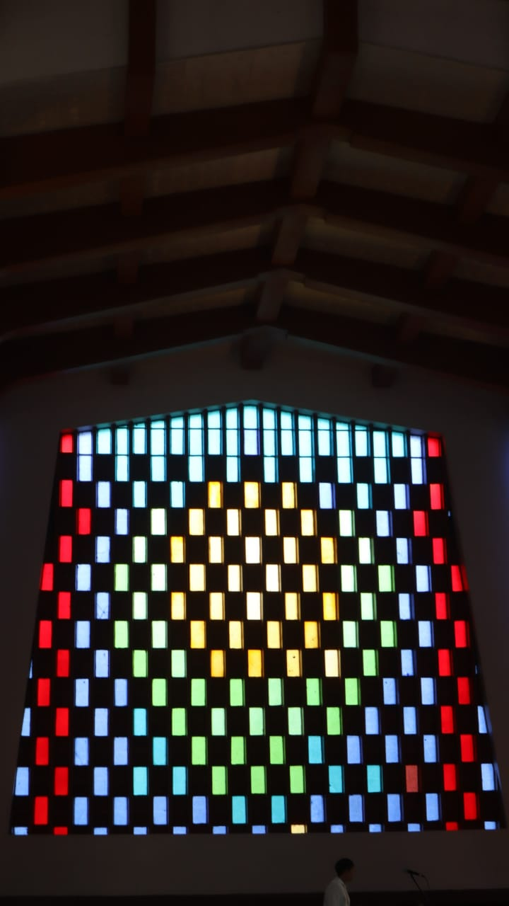
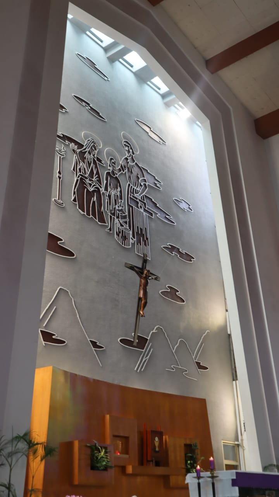
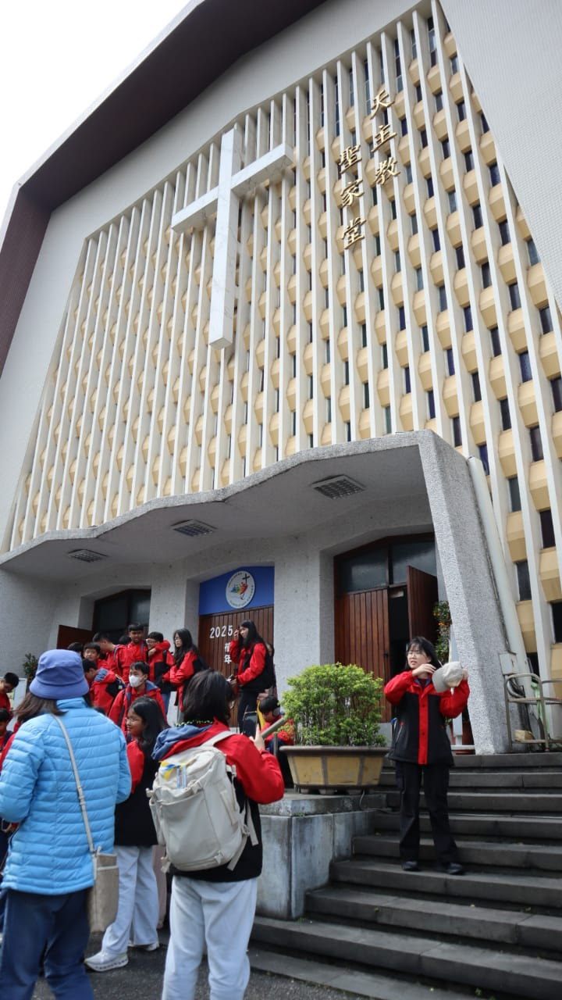
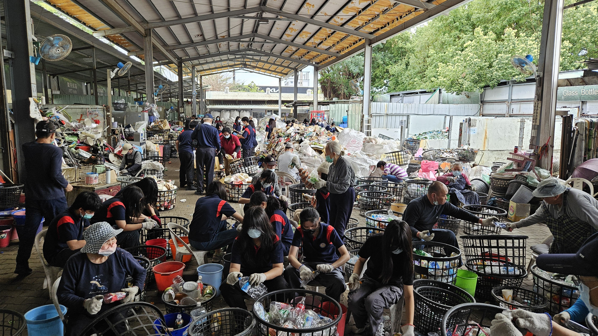
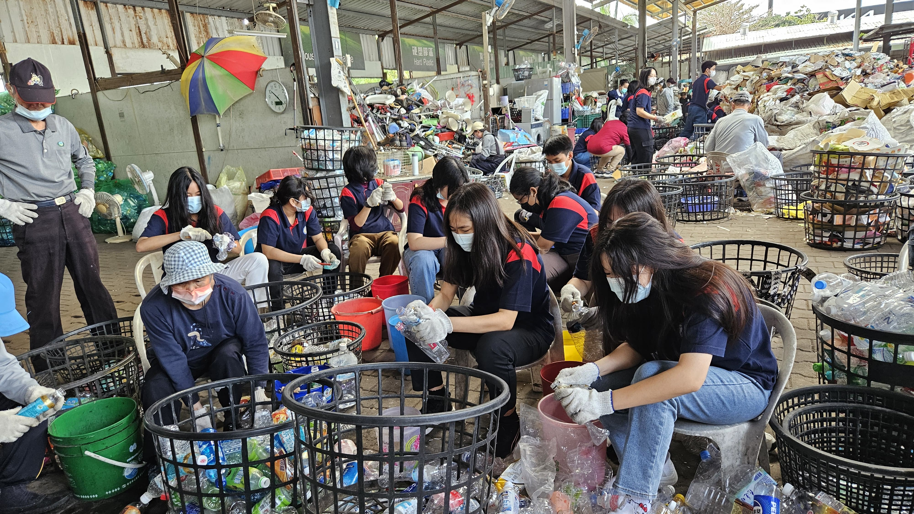
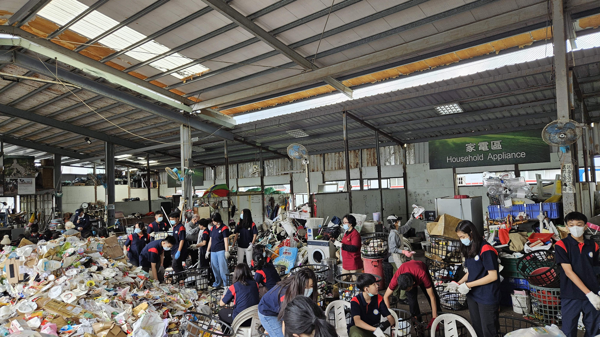

Tugas Agama Taipei Holy Family Church:
1. Amatilah bangunan Gereja yang kamu kunjungi, apakah keunikan bangunan gereja yang kamu kunjungi?
Keunikan bangunan gereja yang saya kunjungi adalah gerejanya memiliki altar yang lumayan luas dan struktur bangunan yang luas dan tinggi.
2. Ceritakanlah sejarah yang ada di Gereja yang kamu kunjungi!
Gereja Holy Family ditemu pada tahun 1953. Gereja ini sudah pernah berpindah tempat dan sudah berdiri selama 72 tahun.
3. Perbedaan apa yang kamu temukan di Gereja yang kamu kunjungi dibandingkan dengan Gereja Santo Laurensius!
Altar di Gereja Holy Family lebih luas dan besar dibandingkan dengan altar yang berada di Gereja Santo Laurensius.



Tugas Agama Refleksi Community Service:
1. Ceritakan kegiatan CS yang kalian lakukan [kepada siapa kamu melakukan, apa tujuan kamu melakukan, bagaimana cara kamu melaksanakan]
Kami melakukan kegiatan CS kepada orang yang bekerja di sana dan juga untuk dunia. Tujuan kami untuk melakukan CS adalah untuk membantu dunia menjadi tempat yang lebih bersih. Saya melaksanakan dengan cara membantu membersihkan sampah-sampahnya.
2. Evaluasi CS [apakah tujuan kegiatan ini tercapai, bagaimana tanggapan orang-orang yang menjadi sasaran kegiatanmu]
Tujuan kegiatan ini tercapai karena kami sudah membantu dan mulai membuat dunia menjadi tempat yang bersih dan nyaman.
3. Refleksi atas kegiatan CS : Sebagai murid Kristus, kita harus menyangkal diri, memanggul salib dan mengikuti Yesus.
a. Jelaskan bahwa kegiatan CS ini menurutmu merupakan pelaksanaan sebagai murid Yesus yang menyangkal diri.
Dengan melakukan kegiatan ini, kita belajar untuk mengutamakan kepentingan orang lain terlebih dahulu dengan mengorbankan tenaga kami demi membantu orang lain seperti yang Yesus ajarkan tentang menyangkal diri.
b. Jelaskan bahwa kegiatan CS ini menurutmu merupakan pelaksanaan sebagai murid Yesus yang memanggul salib.
Kegiatan CS ini ada kesulitan namun, sebagai murid Yesus, kami diajarkan untuk tetap harus menjalankannya dengan tulus hati seperti Yesus yang memanggul salib dengan penuh kasih.
c. Jelaskan bahwa kegiatan CS ini merupakan pelaksanaan sebagai murid Yesus yang mengikuti Yesus!
Kegiatan ini merupakan pelaksanaan sebagai murid Yesus yang mengikuti Yesus karena dengan membantu orang lain, kita tidak hanya berbuat baik tetapi juga menunjukkan nilai-nilai Kristiani sehingga kita benar-benar mengikuti Yesus.